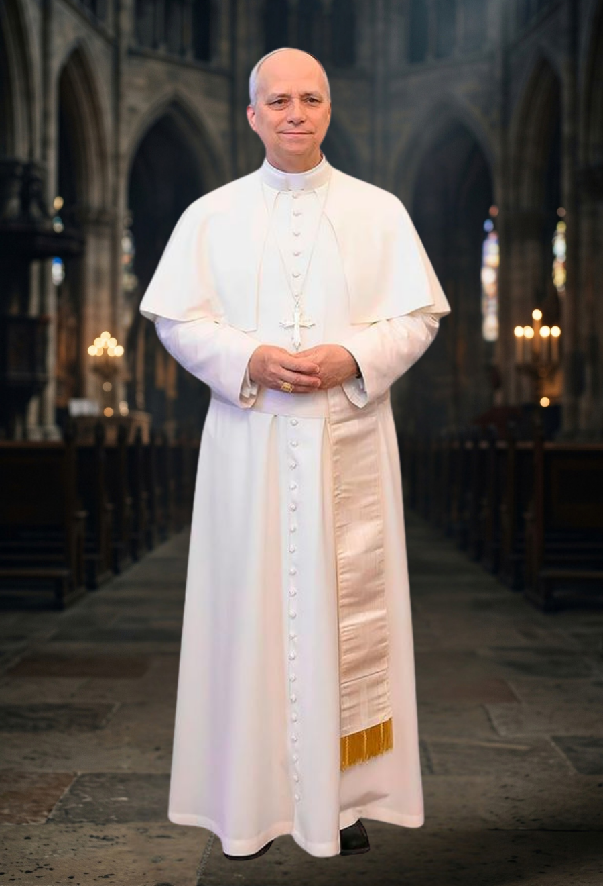
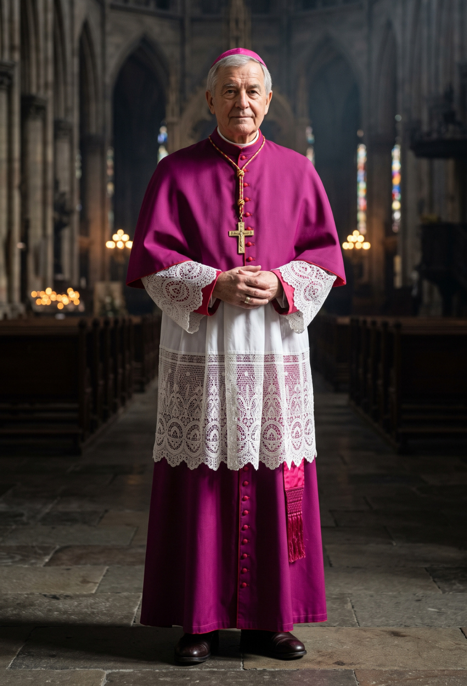
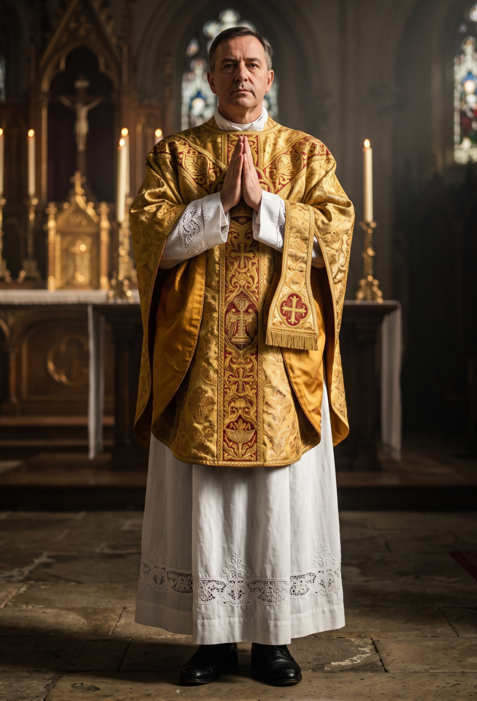
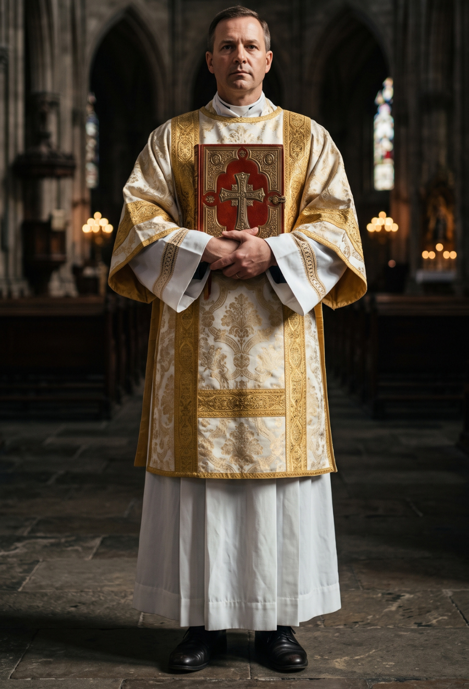
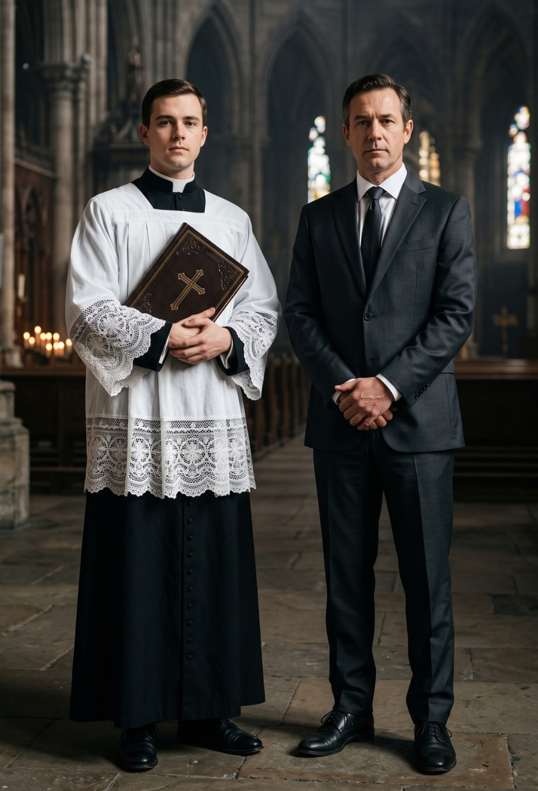
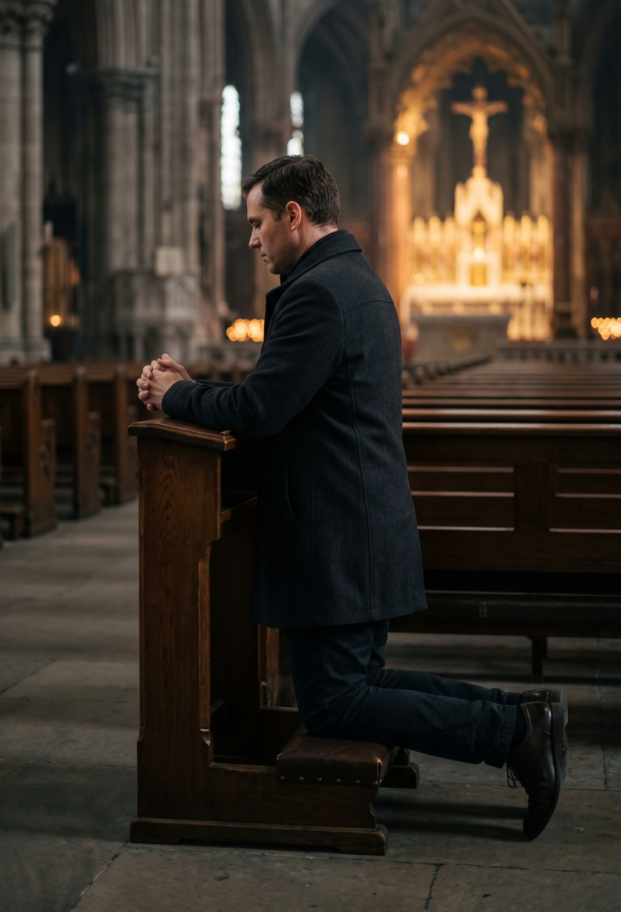

Custodia Litúrgica: Normas y Corrección
Análisis canónico y litúrgico para la defensa del altar, el decoro de la Santa Eucaristía y la corrección de abusos.


1. El Romano Pontífice (El Papa)
- Definición Teológica: Es el Obispo de la Iglesia Romana, en quien permanece la función que el Señor encomendó singularmente a Pedro, primero entre los Apóstoles, para ser transmitida a sus sucesores.
- Función Litúrgica: Es la cabeza del Colegio Episcopal, Vicario de Cristo y Pastor de la Iglesia universal en la tierra.
- Límites y Potestad: Posee potestad ordinaria, suprema, plena, inmediata y universal en la Iglesia. Le compete en exclusiva a la Sede Apostólica ordenar la sagrada Liturgia de la Iglesia universal y vigilar que las normas litúrgicas se cumplan con estricta fidelidad.
2. El Cardenal
- Definición Teológica: No es un grado del sacramento del Orden. Los Cardenales constituyen un Colegio peculiar cuya función principal y exclusiva es proveer a la elección del Romano Pontífice.
- Función Litúrgica: Asisten al Papa de forma colegial en los Consistorios y de forma personal mediante los distintos oficios que desempeñan en el gobierno de la Iglesia.
- Límites y Potestad: Es un título honorífico y de servicio. Para ser creados Cardenales, se elige a varones que hayan recibido al menos el presbiterado.

3. El Obispo
- Definición Teológica: Es el sucesor directo de los Apóstoles por institución divina. Es constituido como Pastor de la Iglesia en virtud del Espíritu Santo, poseyendo la plenitud del sacramento del Orden.
- Función Litúrgica: Es el gran liturgo de su diócesis: el primer dispensador de los misterios de Dios, moderador, promotor y custodio de toda la vida litúrgica.
- Límites y Potestad: A él le corresponde dictar normas litúrgicas obligatorias en su territorio. Los presbíteros y diáconos no son sus iguales, sino sus colaboradores.

4. El Presbítero (Sacerdote)
- Definición Teológica: Es colaborador del orden Episcopal. Asume una parte de la solicitud pastoral del Obispo y forma con él un único presbiterio.
- Función Litúrgica: Preside al pueblo fiel actuando en la persona de Cristo Cabeza (in persona Christi Capitis). Dirige la oración, proclama el Evangelio y asocia al pueblo en la ofrenda del Sacrificio Eucarístico a Dios Padre.
- Límites y Potestad: Está estrictamente subordinado al Obispo. No es dueño de la Liturgia; constituye un abuso gravísimo deformar arbitrariamente la celebración.

5. El Diácono
- Definición Teológica: Recibe la imposición de las manos no para el sacerdocio, sino para el ministerio. Sirve al pueblo de Dios en comunión con el Obispo y su presbiterio.
- Función Litúrgica: Le corresponde proclamar el Evangelio, predicar la homilía (cuando se le delega), proponer las intenciones, asistir en el altar y distribuir la Eucaristía.
- Límites y Potestad: Asiste al sacerdote en el altar, pero no consagra ni preside el Sacrificio Eucarístico. Su ordenación es estrictamente para el servicio.
6. Acólito Instituido vs. Monaguillo
- El Acólito Instituido: Varón llamado a un ministerio estable mediante un rito litúrgico oficial. Su función es servir al altar, y posee la facultad explícita de purificar los vasos sagrados.
- El Monaguillo: Ejerce un servicio temporal, laical y voluntario. En ausencia del acólito instituido, suplen llevando la cruz, los cirios o el incienso.
- Límites y Potestad: El monaguillo suple una necesidad logística temporal, pero no posee el ministerio instituido ni está autorizado bajo ninguna circunstancia para purificar los vasos sagrados.

7. Lector Instituido vs. Lector Voluntario
- El Lector Instituido: Fiel designado de modo estable mediante un rito oficial. Su función propia es proclamar las lecturas (excepto el Evangelio) desde el ambón.
- El Lector Voluntario: Fiel laico delegado temporalmente. Debe estar preparado espiritual y técnicamente.
- Límites y Potestad: La proclamación del Evangelio jamás corresponde al lector (ni instituido ni voluntario), pues es reservada al orden sagrado (diácono, presbítero u obispo).
8. Ministro Extraordinario de la Sagrada Comunión (MESC)
- Definición Teológica: Es un fiel laico delegado de forma ritual y excepcional para asistir en la distribución de la sagrada Comunión.
- Función Litúrgica: Ayudar al celebrante a distribuir el Sacramento única y exclusivamente cuando la necesidad apremiante lo exige.
- Límites y Potestad: Su ministerio es estrictamente subsidiario. Sólo es lícito su uso en casos de verdadera emergencia. Tienen prohibido tomar los vasos sagrados por sí mismos del altar.

9. El Fiel Laico (Sacerdocio Común)
- Definición Teológica: Incorporado a Cristo por el bautismo, participa a su modo de la función sacerdotal, profética y real de Cristo.
- Función Litúrgica: Ofrecer la Víctima Inmaculada a Dios Padre, no sólo por manos del sacerdote, sino juntamente con él, desde la nave del templo.
- Límites y Potestad: La participación activa no significa realizar tareas materiales en el presbiterio. La Iglesia condena radicalmente la "clericalización" del laicado.
Manipulación laical de vasos sagrados
Análisis y denuncia sobre la purificación y traslado indebido de vasos sagrados por fieles laicos no instituidos.
Leer Documento ➔Reserva laical del Santísimo Sacramento
Análisis y denuncia sobre la delegación ilícita del traslado y reserva de la Eucaristía en el Sagrario por ministros extraordinarios.
Leer Documento ➔Omisión sistemática de la casulla
Análisis y amonestación por la celebración del Santo Sacrificio revistiendo únicamente alba y estola.
Leer Documento ➔Uso indebido y profano del ambón
Análisis y denuncia sobre la utilización de la mesa de la Palabra para dar anuncios parroquiales o avisos logísticos.
Leer Documento ➔Usurpación laical y desvirtuación de la Homilía
Análisis y denuncia sobre la cesión de la predicación a laicos y el uso secular de la homilía.
Leer Documento ➔Ministros Extraordinarios: Uso ilícito e irreverencia
Análisis y denuncia sobre la rutinización del ministerio y la actitud profana al distribuir la Eucaristía.
Leer Documento ➔Caso: Manipulación laical de vasos sagrados sin purificar
Derecho Canónico e Instrucción General del Misal RomanoI. Naturaleza de la Infracción
Durante o inmediatamente después de la distribución de la Sagrada Comunión, un fiel laico (monaguillo o servidor del altar ordinario) sin haber recibido la institución formal del acolitado, retira del altar y traslada a la sacristía los vasos sagrados (cáliz, patena, palia y corporal). Estos recipientes son manipulados sin haber sido purificados previamente en el altar por un ministro ordenado, conteniendo aún restos líquidos de la Preciosísima Sangre o fragmentos del Cuerpo de Cristo, lo que representa un peligro inminente de profanación accidental.
II. Marco Litúrgico (Rúbricas)
La práctica descrita es un abuso litúrgico manifiesto que contraviene directamente las disposiciones de la Iglesia.
- La Instrucción General del Misal Romano (IGMR) en su numeral 279 establece taxativamente que la purificación es competencia exclusiva de ministros específicos: "Los vasos sagrados son purificados por el sacerdote, o por el diácono o por el acólito instituido, después de la Comunión o después de la Misa, en cuanto sea posible en la credencia".
- Si los vasos no se purifican inmediatamente en el altar, la normativa exige que el sacerdote los deje "sobre el corporal, convenientemente cubiertos" para purificarlos enseguida después de despedir al pueblo, o encargar al diácono o acólito instituido su traslado a la credencia.
- La instrucción Redemptionis Sacramentum prohíbe la asunción indebida de funciones al sentenciar: "Todos los ministros ordenados y los fieles laicos, al desempeñar su función u oficio, harán todo y sólo aquello que les corresponde".
III. Fundamento Canónico
- Abolición de la "costumbre": El Código de Derecho Canónico invalida el argumento de la "costumbre parroquial" para alterar la liturgia. El Canon 24 § 2 dictamina que "Tampoco puede alcanzar fuerza de ley una costumbre contra ley o extralegal si no es razonable; la costumbre expresamente reprobada por el derecho no es razonable", quedando estas prácticas totalmente suprimidas.
- Derecho a una liturgia íntegra: Los actos arbitrarios en el manejo de la Eucaristía lesionan el derecho canónico inalienable de los fieles a que el sacrificio de la Misa se celebre "de forma íntegra [...] conforme a toda la enseñanza del Magisterio de la Iglesia" y según las normas del rito aprobado.
IV. Calificación y Responsabilidad
- Calificación: Se trata de una grave irregularidad que deforma arbitrariamente la celebración litúrgica y atenta contra la unidad del Rito Romano y el decoro del Sacramento.
- Responsabilidad del Párroco: Recae directa y gravísimamente sobre el Párroco, quien incumple la obligación estipulada en el Canon 528 § 2: "bajo la autoridad del Obispo diocesano, debe moderar el párroco en su parroquia, con la obligación de vigilar para que no se introduzcan abusos".
- Responsabilidad de los presbíteros celebrantes: Al obligar o permitir que un laico asuma funciones eucarísticas no permitidas, los celebrantes vacían su propio ministerio de su significado profundo y faltan a las promesas de su sagrada Ordenación.
V. Protocolo de Acción y Denuncia
Instrucciones de uso: Entregar esta misiva de forma física en la oficina parroquial, solicitando acuse de recibo, o enviarla por correo electrónico oficial al Párroco.
Caso: Delegación ilícita en la reserva del Santísimo Sacramento
Derecho Canónico, IGMR y Redemptionis SacramentumI. Naturaleza de la Infracción
El acto por el cual un presbítero celebrante, sin mediar causa de fuerza mayor, enfermedad o impedimento físico real, delega el traslado y la reserva del Santísimo Sacramento en el Sagrario a un laico (Ministro Extraordinario de la Sagrada Comunión) constituye un abuso litúrgico manifiesto. Este proceder difumina la naturaleza del ministerio sacerdotal, convirtiendo un acto de máxima reverencia sacramental en un mero trámite logístico y permitiendo que un laico asuma roles que el orden sagrado no le confiere.
II. Marco Litúrgico (Rúbricas)
- La Instrucción General del Misal Romano (IGMR) en su numeral 163 es taxativa al designar al sacerdote o diácono para esta labor: "las hostias consagradas que quedaron, o las consume en el altar o las lleva al lugar destinado para conservar la Eucaristía". La normativa no contempla al Ministro Extraordinario para esta función post-comunión cuando el sacerdote está capacitado.
- La Instrucción Redemptionis Sacramentum (RS) advierte severamente en su numeral 11 que el Misterio de la Eucaristía es demasiado grande "para que alguien pueda permitirse tratarlo a su arbitrio personal".
- Asimismo, la RS exige en el numeral 44 que "Todos los ministros ordenados y los fieles laicos, al desempeñar su función u oficio, harán todo y sólo aquello que les corresponde".
III. Fundamento Canónico
- Derecho a una liturgia íntegra: Los fieles tienen el legítimo derecho canónico a que "se celebre por él, de forma íntegra, el santo sacrificio de la Misa, conforme a toda la enseñanza del Magisterio de la Iglesia" (RS 12).
- Prevención de la clericalización: Fomentar que un laico realice acciones propias del orden sagrado contraviene la exigencia eclesial de "evitar el peligro de oscurecer la complementariedad entre la acción de los clérigos y los laicos", para no caer en la "clericalización" de los laicos (RS 45).
IV. Calificación y Responsabilidad
- El Presbítero Celebrante: Es el principal culpable. Al delegar la reserva de las Especies por simple comodidad, peca por omisión y negligencia en la custodia eucarística, vaciando su ministerio y forzando al laico a cometer una irregularidad.
- El Párroco: Recae sobre él la culpa in vigilando estipulada en el Canon 528 § 2, por permitir que en su parroquia se instauren prácticas que alteran la disciplina del Rito Romano.
- El Ministro Extraordinario (Laico): Incurre en usurpación de funciones al realizar una tarea litúrgica que excede el mandato excepcional para el que fue designado, violando el principio fundamental de realizar "sólo aquello que les corresponde".
V. Protocolo de Acción y Denuncia
Instrucciones de uso: Entregar esta misiva de forma física en la oficina parroquial, solicitando acuse de recibo, o enviarla por correo electrónico oficial al Párroco.
Caso: Omisión sistemática de la casulla en la celebración Eucarística
Derecho Canónico, IGMR y Redemptionis SacramentumI. Naturaleza de la Infracción
El acto por el cual un presbítero celebra la Santa Misa revistiendo únicamente alba y estola, sin que medie una causa de fuerza mayor verdaderamente absoluta, constituye una infracción directa a las leyes litúrgicas universales. Esta práctica despoja al rito de su sacralidad visible, banaliza el ministerio sacerdotal y convierte la celebración de los sagrados misterios en un acto sometido al capricho personal del celebrante, lesionando el decoro y la reverencia que exige la Casa de Dios.
II. Marco Litúrgico (Rúbricas)
- La Instrucción General del Misal Romano (IGMR) establece en su numeral 337 como norma imperativa que "La vestidura propia del sacerdote celebrante, en la Misa y en otras acciones sagradas que se relacionan directamente con la Misa, es la casulla o planeta, a no ser que se determinara otra cosa, vestida sobre el alba y la estola".
- La Instrucción Redemptionis Sacramentum (RS) en su numeral 123 es categórica al reprobar este abuso, ordenando que "la vestidura propia del Sacerdote celebrante... es la casulla o planeta, [...] vestida sobre el alba y la estola" y mandando tajantemente a los Ordinarios que extirpen cualquier costumbre contraria.
III. Fundamento Canónico
- Abolición de costumbres contrarias: El Código de Derecho Canónico decreta en su Canon 24 § 2 que "Tampoco puede alcanzar fuerza de ley una costumbre contra ley o extralegal si no es razonable; la costumbre expresamente reprobada por el derecho no es razonable". La omisión de la casulla está expresamente reprobada.
- Derechos de los fieles: La liturgia no es propiedad privada del celebrante. Los fieles tienen el legítimo derecho (Canon 214) a tributar culto a Dios "según las normas del propio rito" y a que "se celebre por él, de forma íntegra, el santo sacrificio de la Misa, conforme a toda la enseñanza del Magisterio" (RS 12).
IV. Calificación y Responsabilidad
La responsabilidad recae única y absolutamente sobre el Presbítero Celebrante. Ningún cargo, ya sea Párroco o Vicario Episcopal, otorga inmunidad frente a las rúbricas del Misal Romano; a mayor dignidad, mayor es la obligación moral de dar un testimonio intachable de obediencia. Al celebrar sin casulla por comodidad, el sacerdote deforma la liturgia, escandaliza a los fieles y falta gravemente a las promesas de obediencia y reverencia de su Ordenación.
V. Protocolo de Acción y Denuncia
Instrucciones de uso: Entregar esta misiva de forma física en la oficina parroquial, solicitando acuse de recibo, o enviarla por correo electrónico oficial al Sacerdote y a la Diócesis.
Caso: Uso indebido y profano del ambón
Derecho Canónico e Instrucción General del Misal RomanoI. Naturaleza de la Infracción
El uso del ambón para dar anuncios parroquiales, promover colectas o realizar intervenciones de índole logística o secular desvirtúa por completo la sacralidad de este lugar. El ambón posee una dignidad intrínseca por estar reservado en exclusiva para la proclamación de la Palabra divina. Utilizarlo para fines comunicativos ordinarios banaliza el misterio, rompe el ordenamiento de los espacios sagrados y confunde a los fieles sobre la veneración suprema que la Iglesia exige para la mesa de la Palabra.
II. Marco Litúrgico (Rúbricas)
- La Instrucción General del Misal Romano (IGMR), en su numeral 309, delimita de forma estricta las funciones permitidas: "Desde el ambón se proclaman únicamente las lecturas, el salmo responsorial y el pregón pascual; también puede tenerse la homilía y proponer las intenciones de la Oración universal". Toda otra intervención es un añadido ilícito.
- La misma norma establece el límite de las personas autorizadas: "La dignidad del ambón exige que a él sólo suba el ministro de la Palabra". Quien sube al ambón para dar avisos logísticos contraviene directamente esta disposición.
- En concordancia con el Ordenamiento de las Lecturas de la Misa, la dignidad de la Palabra de Dios exige que el ambón se reserve exclusivamente para lo que le es propio, debiendo realizarse los avisos parroquiales desde otro lugar conveniente que no sea el ambón.
III. Fundamento Canónico
- Trato arbitrario del culto: El Misterio de la Eucaristía y sus ritos son demasiado grandes "para que alguien pueda permitirse tratarlo a su arbitrio personal". Hacerlo significa realizar actos arbitrarios que "lesionan el verdadero derecho de los fieles a la acción litúrgica" (RS 11-12).
- Derecho al decoro litúrgico: Los laicos y clérigos no son dueños de los lugares sagrados. El Código de Derecho Canónico dictamina en su Canon 214 que "Los fieles tienen derecho a tributar culto a Dios según las normas del propio rito aprobado por los legítimos Pastores de la Iglesia". Imponer avisos profanos desde el ambón vulnera directamente este derecho.
IV. Calificación y Responsabilidad
- El Párroco: Recae sobre él la responsabilidad máxima, directa y gravísima por permitir o promover este abuso. El Canon 528 § 2 le impone la ineludible obligación canónica por la cual "bajo la autoridad del Obispo diocesano, debe moderar el párroco en su parroquia, con la obligación de vigilar para que no se introduzcan abusos".
- Los presbíteros concelebrantes y laicos delegados: Incurren en una violación material de las rúbricas al utilizar el ambón para fines profanos, ignorando que, en el desempeño de sus oficios, "harán todo y sólo aquello que les corresponde" (RS 44).
V. Protocolo de Acción y Denuncia
Instrucciones de uso: Entregar esta misiva de forma física en la oficina parroquial, solicitando acuse de recibo, o enviarla por correo electrónico oficial al Párroco.
Caso: Usurpación laical y desvirtuación de la Homilía
Derecho Canónico, IGMR y Redemptionis SacramentumI. Naturaleza de la Infracción
La homilía no es un intermedio, un discurso social ni un foro abierto; "es parte de la misma liturgia" y un acto eminente del ministerio ordenado. Su fin es proclamar las maravillas de Dios y explicar el misterio de Cristo. Cuando el presbítero cede este espacio a un laico para anuncios o reflexiones, o cuando él mismo lo utiliza para comentarios políticos o seculares, está vaciando el sentido genuino de la Palabra de Dios y mutilando la Liturgia de la Palabra, negando a los fieles la exégesis salvífica que la Iglesia le ha encomendado en su ordenación.
II. Marco Litúrgico y Canónico
- Canon 767 § 1: Establece taxativamente que "Entre las formas de predicación destaca la homilía, que es parte de la misma liturgia y está reservada al sacerdote o al diácono".
- IGMR 65: Ordena que la homilía "Conviene que sea una explicación o de algún aspecto de las lecturas de la Sagrada Escritura, o de otro texto del Ordinario, o del Propio de la Misa del día".
- IGMR 66 y RS 64: Son inflexibles al decretar que la homilía "la hará de ordinario el mismo sacerdote celebrante... o a veces, según las circunstancias, también al diácono, pero nunca a un laico".
- RS 65: Advierte con severidad que "debe tenerse por abrogada, según lo prescrito en el canon 767 § 1, cualquier norma precedente que admitiera a los fieles no ordenados para poder hacer la homilía... Se reprueba esta concesión, sin que se pueda admitir ninguna fuerza de la costumbre".
- RS 67: Prohíbe de forma absoluta que se vacíe el sentido auténtico de la Palabra de Dios "tratando sólo de política o de temas profanos, o tomando como fuente ideas que provienen de movimientos pseudo-religiosos de nuestra época".
III. Fundamento Canónico
- Derecho a los bienes espirituales: Los fieles tienen el derecho inalienable a "recibir de los Pastores sagrados la ayuda de los bienes espirituales de la Iglesia, principalmente la palabra de Dios y los sacramentos" (Can. 213).
- Preservación del orden sagrado: Privar al pueblo de la homilía sacerdotal para introducir alocuciones laicales o profanas va contra la exigencia de evitar confusiones entre el sacerdocio ministerial y el común. Cualquier instrucción o testimonio de un laico, aun por causa grave, jamás puede confundirse con la homilía, y "ni se permite que por ello se suprima totalmente la homilía".
IV. Calificación y Responsabilidad
- El Presbítero Celebrante: Incurre en culpa gravísima por dejación de funciones y desobediencia manifiesta al Magisterio. Al omitir su deber de predicar la Palabra y delegarlo a un laico, fomenta la usurpación. Al usar el púlpito para discursos profanos, ofende la santidad del culto y defrauda el patrimonio espiritual de los fieles.
- El Párroco: Si no es él el celebrante, incurre en falta de vigilancia. Está obligado a "procurar que la palabra de Dios se anuncie en su integridad a quienes viven en la parroquia" (Can. 528 § 1) y a vigilar "para que no se introduzcan abusos" (Can. 528 § 2).
- El Fiel Laico: Aunque sea invitado por el sacerdote, al asumir el momento de la homilía participa materialmente en un abuso y en una transgresión de los límites de su estado en la Iglesia.
V. Protocolo de Acción y Denuncia
Instrucciones de uso: Entregar esta misiva de forma física en la oficina parroquial, solicitando acuse de recibo, o enviarla por correo electrónico oficial al Párroco.
Caso: Uso ilícito y trato irreverente por parte de Ministros Extraordinarios de la Sagrada Comunión
Derecho Canónico y Redemptionis SacramentumI. Naturaleza de la Infracción
La infracción posee una doble vertiente. Por un lado, la rutinización del Ministro Extraordinario de la Sagrada Comunión (MESC) desvirtúa el carácter netamente "extraordinario" y supletorio de este servicio laical. Se banaliza el Sacramento cuando se iguala la distribución eucarística a una simple función logística que cualquiera puede realizar, difuminando la diferencia esencial entre el sacerdocio ordenado y el sacerdocio común. Por otro lado, la actitud irreverente (charlas, saludos profanos y manejo del Copón como un recipiente común) constituye una falta gravísima de adoración y respeto hacia el misterio eucarístico, tratando a Cristo vivo como algo profano y ordinario.
II. Marco Litúrgico (Rúbricas)
- La Instrucción Redemptionis Sacramentum (RS) en sus numerales 151, 157 y 158 establece sin ambigüedades que el uso de Ministros Extraordinarios se restringe única y exclusivamente a casos de verdadera necesidad: cuando faltan ministros ordinarios o cuando el número de fieles es tan inmensamente grande que la celebración se prolongaría de manera indebida. Si hay suficientes ministros ordenados, o si la asamblea es reducida (como en una Misa de diario), el uso de laicos para distribuir la Eucaristía es ilícito.
- Asimismo, RS 11 advierte severamente que el Misterio de la Eucaristía es demasiado grande "para que alguien pueda permitirse tratarlo a su arbitrio personal". Actuar cediendo a inspiraciones profanas "atenta contra la unidad substancial del Rito romano" y "defrauda el patrimonio y la herencia de los fieles".
III. Fundamento Canónico
- Deber de adoración: La reverencia hacia el Sacramento no es opcional, es un mandato legal y espiritual vinculante. El Canon 898 del Código de Derecho Canónico estipula como un deber inexcusable que los fieles han de tener en suma veneración la Santísima Eucaristía, rindiéndole el culto supremo de adoración. La actitud social, relajada e irreverente de estos ministros al transitar por la nave viola frontalmente este mandato canónico, escandalizando a la asamblea y rebajando la majestad del Sacramento del Altar.
IV. Calificación y Responsabilidad
- El Párroco / Presbítero Celebrante: Recae sobre él la responsabilidad directa y culposa por omisión y negligencia. Al permitir la rutinización de los MESC cuando hay ministros ordinarios disponibles, incumple sus obligaciones litúrgicas. Al tolerar las actitudes irreverentes, se hace cómplice de la banalización del Sacramento, fallando a su deber canónico de "vigilar para que no se introduzcan abusos" (Can. 528 § 2).
- Los Ministros Extraordinarios (Laicos): Incurren en una falta grave de irreverencia material y usurpación de funciones. Olvidan que su ministerio es excepcional y se convierten en agentes de confusión y escándalo al comportarse de manera secular portando el Cuerpo de Cristo.
V. Protocolo de Acción y Denuncia
Instrucciones de uso: Entregar esta misiva de forma física en la oficina parroquial, solicitando acuse de recibo, o enviarla por correo electrónico oficial al Párroco.